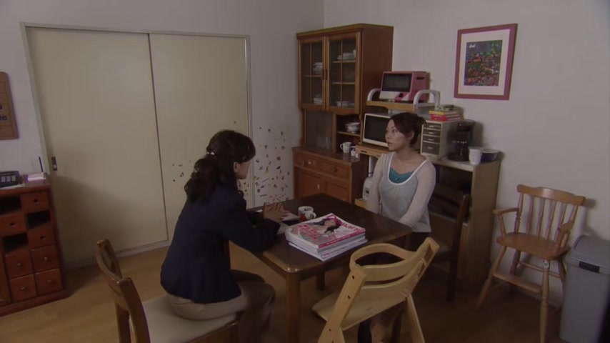

とても

Comprehensible Japanese · A Day in my Life in Sendai
この自転車は、電気の力で動くので、とても快適です。
"This bike runs on electric power, so it's very comfortable."
とても means very. It goes right before the describing word: とても + 快適 = "very comfortable".
On this card, the electric bike answers "how comfortable?" with "a lot". Without とても, 快適です is just "it's comfortable".
とても itself never changes. Polite or casual only shows at the end: とても快適です / とても快適だ.
Examples
Small talk with a neighbour on a winter morning.
今日はとても寒いですね。
"It's very cold today, isn't it."
PoliteSomeone asks what your hometown is like.
とても静かな町です。
"It's a very quiet town."
Before a noun, とても still sits in front of the describing word: とても静かな + 町.
PoliteYou get home after a long day of moving boxes.
とても疲れた。
"I'm really tired."
とても also works with feeling words that are verbs: 疲れる, 困る, 驚く.
CasualA friend lets you try their curry.
とってもおいしい！
"Super tasty!"
とても sounds a little neat. With friends, people often say とっても (warmer, stronger) or すごく instead.
CasualWith and without
この本は面白いです。
"This book is interesting." A plain fact.
この本はとても面白いです。
"This book is very interesting." You really mean it.
Sentence mining

Comprehensible Japanese · My Five Favorite Things
とってもおすすめです。
"I really recommend it."
とっても is the warmer, stronger way to say とても.

I'm Taking the Day Off · Episode 9
正直、とても残念です。
"Honestly, it's very disappointing."
とても + 残念 ("disappointing, a shame") = "very disappointing". 正直: "honestly".

Legal High · Episode 2
やっぱり とても悲しいです。
"It really is very sad."
とても + 悲しい ("sad") = "very sad". やっぱり: "after all, really".

1 Litre of Tears · Episode 2
とっても大切なことなんですよ。
"It's a very important thing."
とっても is とても with extra feeling.
Overprotected Kahoko · Episode 2
逆の場合は とっても悲しいんで
"When it's the other way round, it's very sad."
とっても + 悲しい ("sad").

I am Mita, Your Housekeeper · Episode 8
とてもいいと思うな、あの家族。
"I think that family is really nice."
とても + いい ("good") = "really nice". The topic, あの家族 ("that family"), comes at the end as an afterthought.

The Wind Rises
これ、とても暖かいの。
"These are so warm."
とても + 暖かい ("warm") = "really warm". の at the end: soft, explaining.